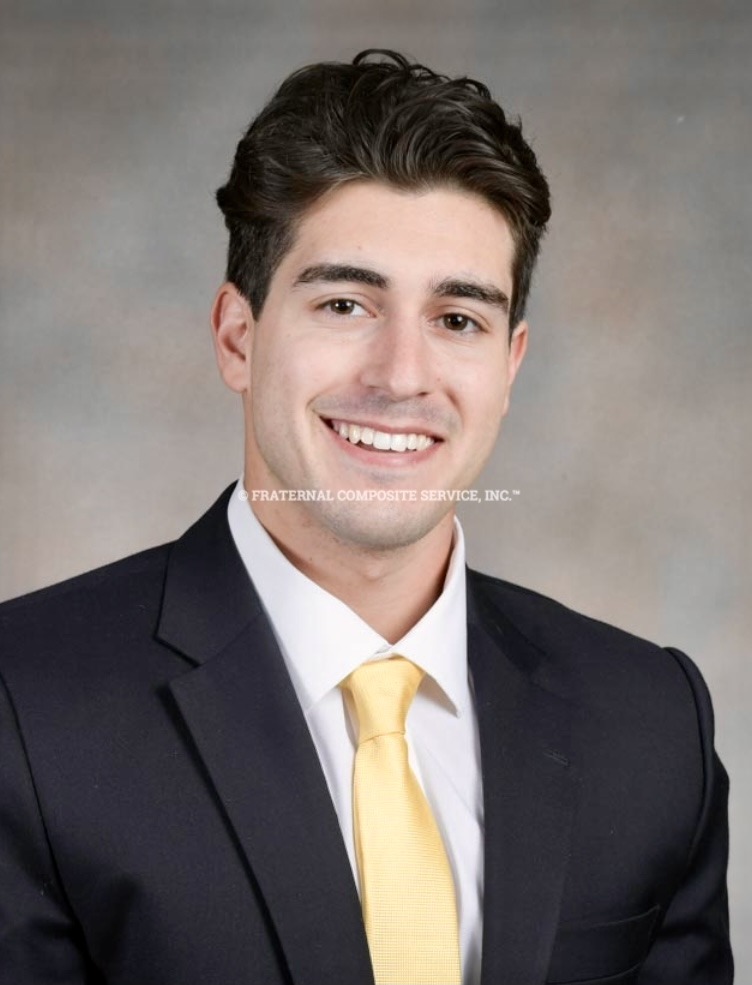

Logan Loewenstein
Visual Journalist and Digital Leader

Contact Information
Experience
Social Media/Marketing Intern
Club Glow
August 2021 - Prensent
- Created and posted original content for social media across all platforms and
tracked social media audience engagement and analytics.
- Covered live shows at Echostage, Soundcheck, Moonrise Music Festival and more.
Bartender/Server
Mother's Cantina
May 2021 - August 2021
- Performed customer service efforts, including waiting tables, washing dishware, cleaning the restaurant, and running food.
Executive Board Member, Social Chairmen
Alpha Tau Omega
October 2020 - November 2021
- Head the social media accounts and create promotional videos, graphics and merchandise
- Planned social/recruitment events for the chapter through University of Maryland.
Host of Ambrosia 88.1
WMUC Radio
October 2019 - November 2021
- Produce my own show by airing local music, discussing music news, reviewing new albums or concert experiences
- Release weekly playlists on Spotify and create graphics for social media accounts.
Education
- Northwest High School
- Bachelor of Arts, Multiplatform Journalism and Minor in Philosophy, University of Maryland, College Park, 2023.
Skills
- Video Production and Editing
- Motion Graphics
- Public Speaking
- Web Writing
- Audience Engagement and Analytics